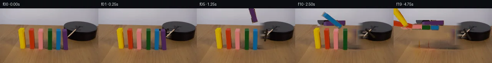

![首帧]()

Round 00
2026-11-05T06:43:28.284851+00:00像素候选变化代码 +395/−0inspection 更新
pixels ba748b49d2420439 · code 9f1b463647890f1c
查看本轮 generate.py 真实 diff
--- previous/generate.py
+++ current/generate.py
@@ -0,0 +1,395 @@
+#!/usr/bin/env python3
+"""PixelWorld-Text: Domino animation from first_frame.png
+
+A wooden stick attached to a black platform rotates clockwise and
+hits the first of six colorful blocks lined up on a wooden table,
+triggering a domino chain reaction.
+
+Method: Extract block sprites from frame 0, create a clean background
+via horizontal interpolation, then animate stick rotation and cascading
+block falls using affine transforms of the extracted sprite regions.
+"""
+import numpy as np
+from PIL import Image
+from pathlib import Path
+import artifact_io
+
+CASE_DIR = Path(__file__).resolve().parent
+H, W = 144, 256
+N_FRAMES = 20
+
+# ── load frame 0 ──────────────────────────────────────────────────
+img0 = np.array(Image.open(CASE_DIR / "first_frame.png")).astype(np.float32)
+assert img0.shape == (H, W, 3)
+
+# ── block definitions (x0,x1, y0,y1) bounding boxes ────────────────
+# Each block stands vertically; pivot is at bottom center on table.
+blocks = [
+ {"name": "Yellow", "x0": 47, "x1": 66, "y_top": 49, "y_bot": 110, "color": "gold"},
+ {"name": "Red", "x0": 73, "x1": 90, "y_top": 49, "y_bot": 110, "color": "red"},
+ {"name": "Pink", "x0": 98, "x1": 115, "y_top": 47, "y_bot": 109, "color": "pink"},
+ {"name": "Green", "x0": 123, "x1": 138, "y_top": 49, "y_bot": 112, "color": "green"},
+ {"name": "Blue", "x0": 144, "x1": 159, "y_top": 50, "y_bot": 112, "color": "blue"},
+ {"name": "Purple", "x0": 162, "x1": 178, "y_top": 38, "y_bot": 112, "color": "purple"},
+]
+
+# Extract each block as a sprite with alpha mask
+block_sprites = []
+for b in blocks:
+ x0, x1 = b["x0"], b["x1"]
+ y0, y1 = b["y_top"], b["y_bot"]
+ sprite_rgba = np.zeros((y1 - y0, x1 - x0, 4), dtype=np.float32)
+ sprite_rgba[:, :, :3] = img0[y0:y1, x0:x1]
+ # Create alpha mask: opaque for block pixels (significantly different from table)
+ # Table reference color in block region
+ table_ref = np.array([135.0, 100.0, 63.0])
+ pixel_diff = np.sqrt(np.sum((sprite_rgba[:, :, :3] - table_ref) ** 2, axis=2))
+ # Also include the dark background above table in block region
+ alpha = np.where(pixel_diff > 30, 1.0, 0.0).astype(np.float32)
+ # Ensure pixels at y_bot-1 (bottom of block) are opaque
+ alpha[-5:, :] = np.maximum(alpha[-5:, :], 0.9)
+ # Also make top portion opaque (block top includes dark/colored pixels)
+ alpha[:5, :] = np.maximum(alpha[:5, :], 0.5)
+ sprite_rgba[:, :, 3] = alpha
+ block_sprites.append({
+ "name": b["name"],
+ "sprite": sprite_rgba,
+ "x0": x0, "x1": x1,
+ "y_top": y0, "y_bot": y1,
+ "pivot_x": (x0 + x1) / 2.0, # center x
+ "pivot_y": float(y1), # bottom edge = table surface
+ })
+
+# ── stick definition ──────────────────────────────────────────────
+# The stick is a thin wooden rod attached to the black platform.
+# Pivot: top of black platform, approximately (183, 56)
+stick_pivot = np.array([183.0, 55.0])
+stick_length = 32.0 # pixels
+stick_width = 4.0 # pixels
+# Initial angle: stick extends up-left from pivot
+# Tip in frame 0 is approximately at (169, 51), so vector = (-14, -4)
+stick_angle_initial = np.arctan2(51 - stick_pivot[1], 169 - stick_pivot[0])
+# This is approximately -0.28 rad or -16 degrees (pointing left-up)
+
+# ── create clean background ──────────────────────────────────────
+# For each row, fill block regions by interpolating between left/right table pixels
+bg_clean = img0.copy()
+for y in range(H):
+ for b in blocks:
+ x0, x1 = b["x0"], b["x1"]
+ y0, y1 = b["y_top"], b["y_bot"]
+ if y < y0 or y > y1:
+ continue
+ # Get pixels from left and right of block
+ margin = 5
+ left_x = max(0, x0 - margin)
+ right_x = min(W - 1, x1 + margin)
+ # Sample from left side
… diff truncated; 308 more lines …